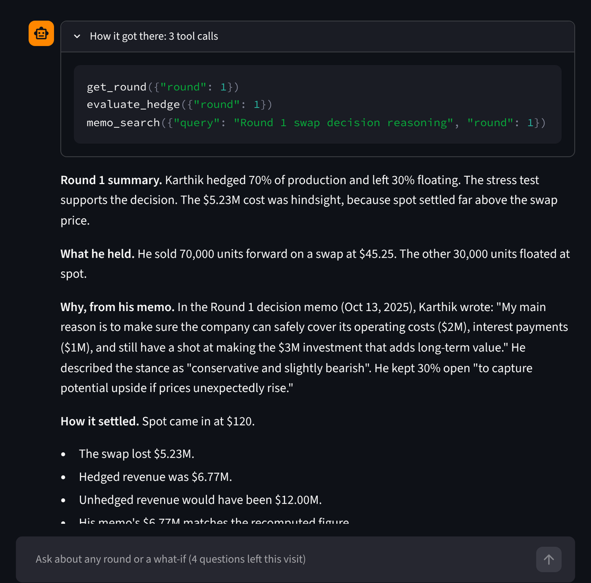

Commodity Hedging & AI Treasury Analyst
Rebuilt an eight-round hedging game from my Fall 2025 weekly decision memos, where I hedged a producer's 100,000 units a round with swaps, zero-cost collars and a floating slice. My hedges cost 4.6% of revenue ($74.7M vs $78.3M unhedged) and cut volatility 30%. Looking only at what happened, the hedges seemed unnecessary, because the unhedged book never hit the bankruptcy line either. So I priced every collar with Black-76 and ran each round's position through 10,000 Monte Carlo scenarios. Unhedged, there was about a 25% chance of the $20M bankruptcy penalty each round, and my hedges cut that to about 1%. The cost was the investment: the hedges lowered the odds of funding it from 26% to 18%.
Then I built an AI treasury analyst on top of it with the Claude API, with a live chat app. It takes a question in plain English, like what would have happened if I had hedged 40% in Round 4, and Claude decides which of my Python functions to run: settlement, the stress test, Black-76 pricing, or a search over my original memos. The math stays in my code, and a guardrail checks every number in the answer against what the tools returned. It also caught something I missed: in Round 7, hedging the 20,000 units I left floating would have put a floor under revenue above the $20M investment hurdle.

Python, Claude API, Streamlit, Monte Carlo, Black-76, Excel